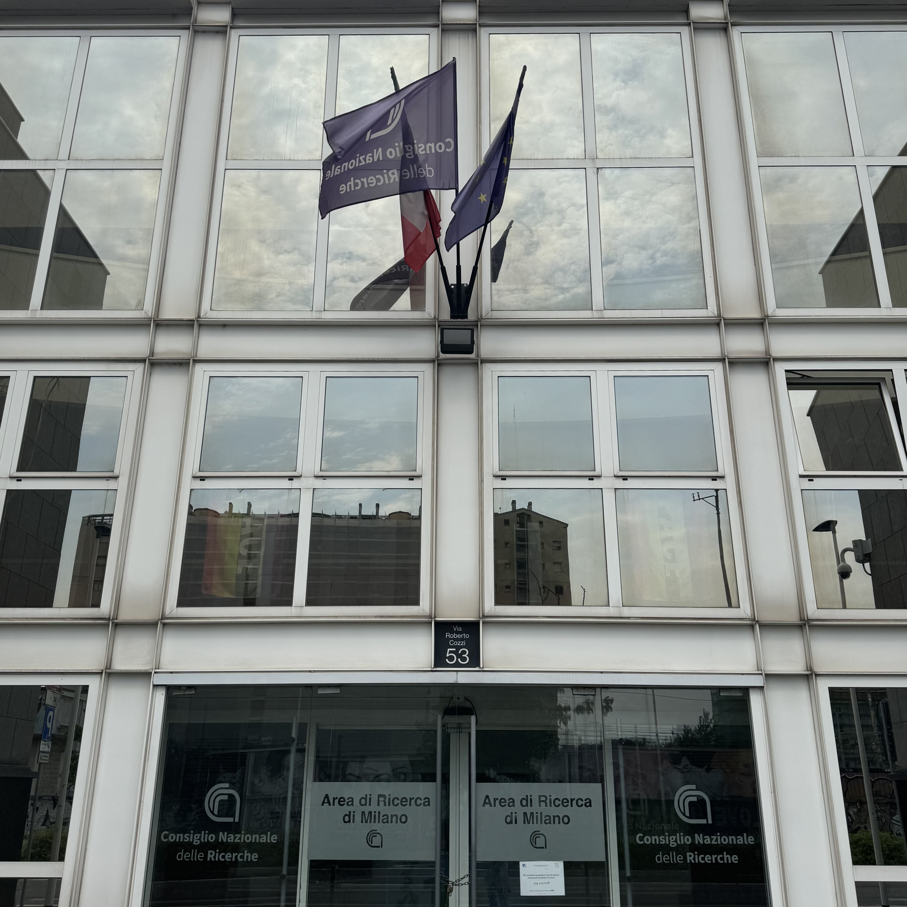

☰
PCTO

Consiglio Nazionale delle Ricerche
Dipartimento di Scienze del Patrimonio Culturale
Istituto ospitante: CNR – Istituto di Scienze del Patrimonio Culturale
Periodo dello stage: dal 9 al 20 giugno 2025
Ore totali svolte: 75 ore
Tutor scolastico: prof. Fossati
Tutor aziendale: dott.ssa Irene Rossi
Attività
- 9-11 giugno
Introduzione dei Regni Sudarabici da parte di Irene e inserimento delle prime Iscrizioni dedicatorie
su DASI (Digital archive for the study of Pre-Islamic Arabian inscription);
- 12 giugno
Inserimento dei primi graffiti Minei
- 13 giugno
Lavoro da casa, inserimento di 50 graffiti Minei con riferimenti alle pubblicazioni di Jaussen e Savignac.
- 16-18 giugno
Lavoro con Giulia, inserimento di graffiti del sito di ʿĀn Jamal.
- 18-20 giugno
Programmazione di un tesauro che si basa sulle triple RDF e di un’applicazione che
permetta di visualizzarne i contenuti.
-
->Scopri qui il tesauro che abbiamo realizzato<-
Considerazioni personali e bilancio delle competenze
Questa esperienza di stage mi ha permesso di immergermi in un contesto di ricerca a livello nazionale,
facendomi scoprire un ambito di studi, l’epigrafia sudarabica, che non conoscevo.
Durante queste due settimane ho sviluppato varie competenze tra cui:
- Digitalizzazione dei dati storici e utilizzo di archivi specialistici come DASI;
- Analisi e interpretazione di fonti epigrafiche antiche;
- Organizzazione autonoma del lavoro (soprattutto durante le giornate di lavoro a distanza);
- Collaborazione in team con ricercatori;
- Informatica umanistica, in particolare l’uso delle tecnologie semantiche e strumenti digitali
applicati alla valorizzazione del patrimonio culturale.
In conclusione, considero questa esperienza molto positiva, dato che mi ha fatto comprendere meglio
l’importanza della ricerca scientifica nel campo umanistico e mi ha dato l’occasione di contribuire
in modo concreto a un progetto internazionale di alto valore culturale.